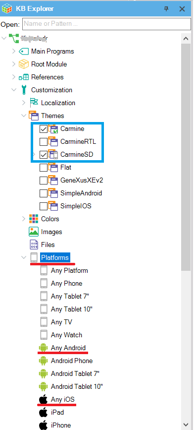
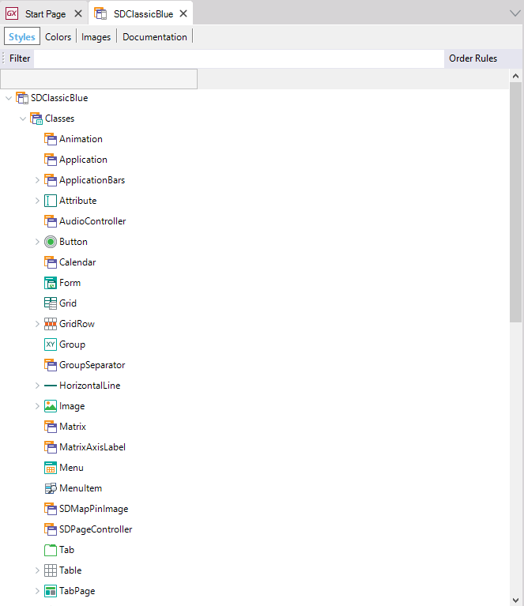
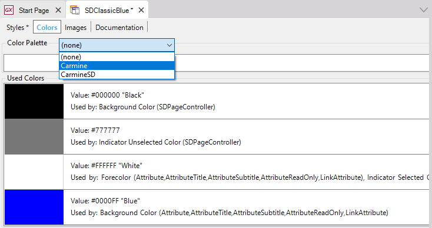
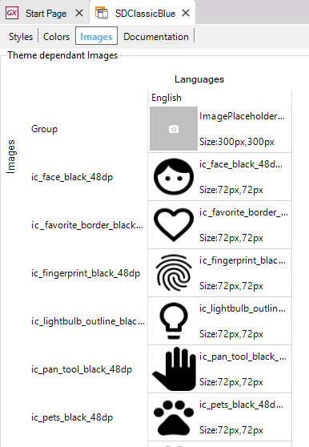

Theme object
Defines graphic and functional design of controls for applications.
Description
When you use the Native Mobile Generator (for example, when creating or importing the first object related to a mobile app into your Knowledge Base), the 'CarmineSD' Theme object is automatically imported with two child-themes: 'CarmineIOS' and 'CarmineAndroid'.
The 'CarmineIOS' and the 'CarmineAndroid' Theme are automatically assigned under the Platforms node to the "Any iOS" subnode and the "Any Android" subnode respectively (in their Theme property). Each specific iOS platform (iPad, iPhone, iPhone 3.5", etc.) inherits the Theme configured for the "Any iOS" node and each specific Android platform inherits the Theme configured for the "Any Android" node. You could change all those Themes, to get different looks and feels depending on the device type.

There also exist two more Themes (backward-compatible) that can be imported and set: SimpleAndroid and SimpleiOS.
You can create your own Theme object based on one of the existing, or new at all (all classes with its default value) by selecting in the main GeneXus menu File > New Object.
The created Theme automatically will contain a group of predefined classes corresponding to GeneXus controls (and also, other elements).

Styles tab
Displays every component of a Theme object in a tree-like interface.
- Classes node
- Animation (1)
- Application
- ApplicationBars
- Attribute
- AudioController
- Button
- Calendar
- Form
- Grid
- GridRow
- Group
- GroupSeparator
- HorizontalLine
- Image
- Matrix
- MatrixAxisLabel
- Menu (ex Dashboard)
- MenuItem (ex DashboardOption)
- Progress (2)
- SDMapPinImage
- SDPageController
- Tab
- Table
- TabPage
- TextBlock
- Transformations node
- Fonts node
Notes
(1) Available as of GeneXus 15 Upgrade 8
(2) Available as of GeneXus 15 Upgrade 9
Color tab
Allows you to select a Color Palette object that applies to the Theme object, displaying which colors are used (in the palette or not) for that theme. Also, for each color, will display a properties list with theme-class that uses such colors. That simplifies the developer task of discovering which color is applying to.

For more information, refer to Colors Tab of Theme Object.
Images tab
At this tab, all the images used by the Theme object will be displayed. When an image varies with a theme, only the corresponding to this theme is shown.

See also
Videos
 Design Systems
Design Systems
Images and Theme Object
| Pages | ||
| Additional Themes property (GeneXus 17 u4 and prior) | Dark Theme property | Enable Preferred Color Scheme property |
| SimpleAndroid Theme for Smart Devices | Transformations | Using Custom Fonts |